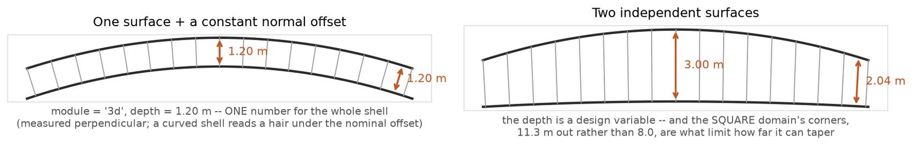
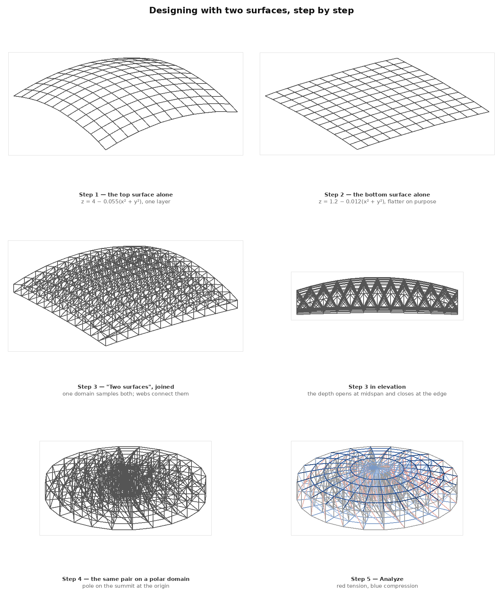
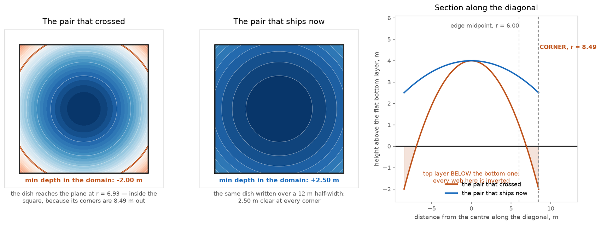
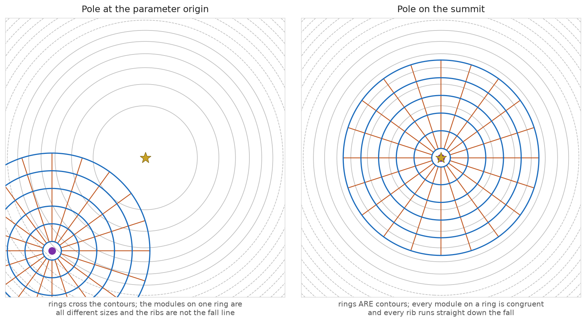
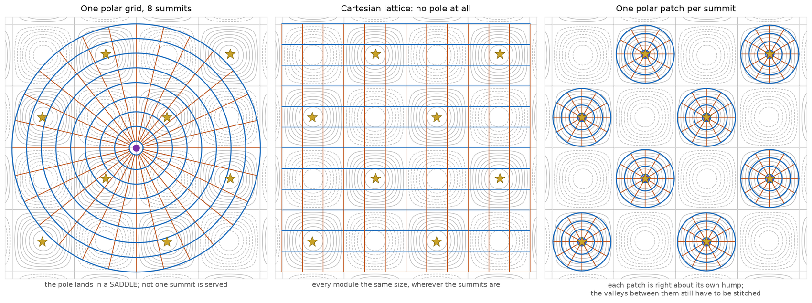
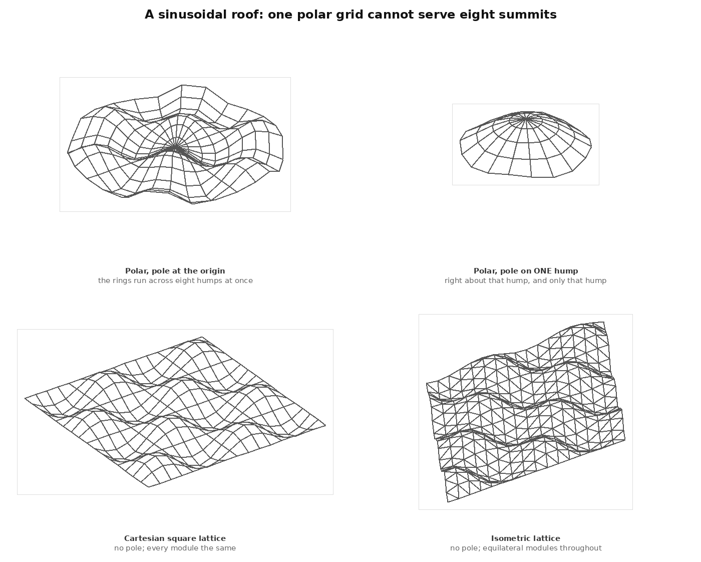
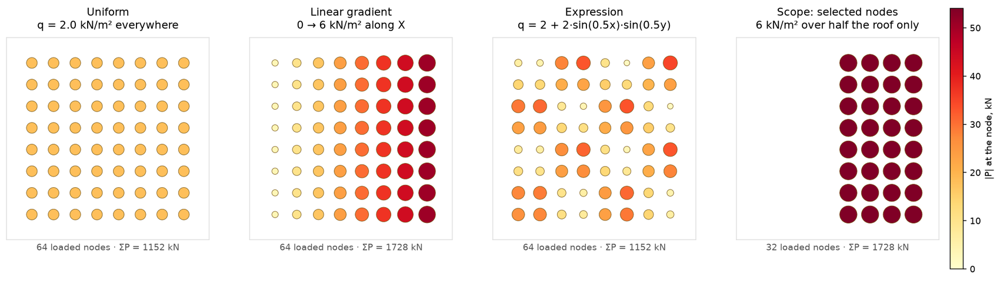
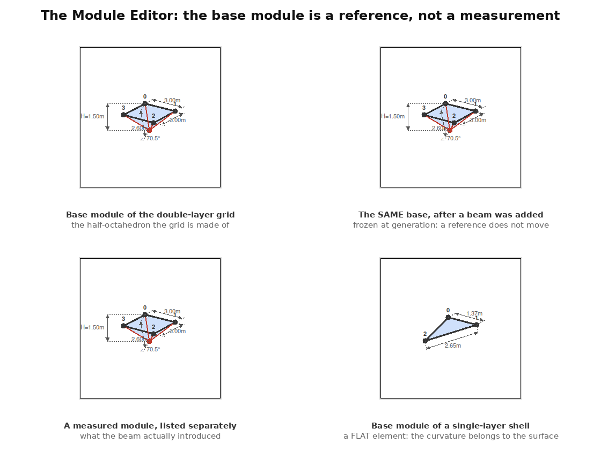
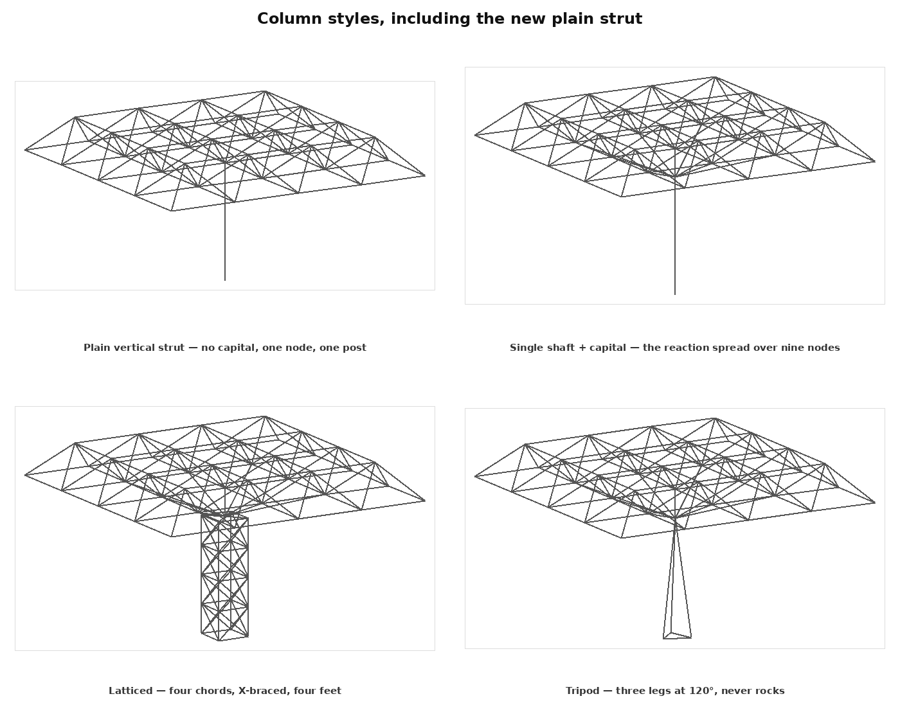

Stereo tab · surface design
Laying a Grid on a Surface
How to build a space truss between two surfaces you define yourself — and what to do when the surface has more than one summit, which is where a polar grid stops working.
- rings / hoops
- ribs / meridians
- the pole
- a summit
Part 1 — Two surfaces, step by step
A space truss is two layers and the webs between them. The Custom Surface Wizard can build that two ways, and the difference is the whole design.
The quick way is module = 3d: you define one surface and the app makes the second by pushing every node a fixed distance along the local normal. That is a shell of constant thickness. It is correct, it is fast, and it gives you no say in the one variable that matters most in a truss — the depth.
The design way is Two surfaces: you define the top and the bottom independently, and the truss depth becomes whatever the gap between them is at each point. Deep at midspan where the moment is, shallow at the springing where it isn't.

- 01
Write the top surface
Open Custom Surface Wizard, pick Two surfaces (top + bottom), and type the top as a height field — 4 - 0.020*(x^2 + y^2) is the shallow dome in the plates. Use the keypad if you want the real glyphs; it inserts the ASCII the parser reads.
- 02
Write the bottom surface — flatter, not parallel
1.0 - 0.0035*(x^2 + y^2). The rule of thumb: give the bottom a smaller curvature coefficient than the top. The two then converge towards the edges and open in the middle, which is the depth profile you want. Make them equal and you have re-invented the constant offset. Make the difference too big and they cross — which the app now refuses outright, for the reason in the warning below.
- 03
Set the domain — where on the (x, y) plane you are sampling
The domain is a window on the parameter plane, not on the structure. Cartesian p: -8 to 8, q: -8 to 8 takes a 16 × 16 m square out of a surface that is defined everywhere. This is the step people skip: the expression makes an infinite surface, the domain is what makes it a building.
- 04
Set n1 and n2 — the module size
The module is the domain span divided by the division count. 16 m over n1 = 12 is a 1.33 m module. Pick the module first, then work back to the count; that is how the grid ends up at a buildable dimension instead of an arbitrary one.
- 05
Pick the pattern
Square for an orthogonal grid, Diagonal for both diagonals in every cell, Isometric for a true 60° equilateral lattice. On a single-layer surface only Isometric is fully triangulated on its own — the other two rely on the web layer for stiffness.
- 06
Generate, then Analyze
Supports are pinned around the boundary automatically. The area load defaults to 2.0 kN/m² down, spread by each node's real tributary area.


The two surfaces must not meet inside the domain
Where they meet, the web joining them has zero length — a member with no direction, which is not a structure. Past where they cross, the surface you called "top" is underneath: the webs are inverted and one layer's chords pass through the other's. The result is not slightly wrong, it is inside out.
This is easy to do by accident because the domain is usually a rectangle and the surfaces are usually radial, so the corners reach 41% further than the edges. Generate now refuses a crossed pair and names the point where they meet, so you can decide whether to shrink the domain or change an expression. It samples three times finer than the mesh lattice, so a crossing that dips between two nodes is still caught.
The starting point
Both surfaces are sampled over one domain. Node (i, j) on the top and node (i, j) on the bottom are the two ends of the same web. So the domain is not a property of either surface — it is the thing that puts them in correspondence, and it is the real starting point of the mesh.
Part 2 — Choosing the domain
Two coordinate systems, and the choice is not cosmetic: it decides what the modules look like and where the singular point of the grid goes.
Cartesian
p and q are the surface's own x and y. The lattice is a rectangle of rows and columns, every module the same size, and there is no special point anywhere on it. A rectangular building plan wants this.
Polar
p is read as a radius and q as an angle, so the lattice becomes rings and ribs about a centre. A circular plan wants this — and a circular plan is usually a dome, which is the case where the polar grid does something Cartesian cannot: the rings run along the surface's contours and the ribs run straight down its fall.
That is worth saying precisely, because it is the whole argument for polar and it is only true under one condition. The pole has to be on the summit.
| Wizard field | Cartesian | Polar |
|---|---|---|
| p range | x from … to … | radius, rmin to rmax |
| q range | y from … to … | angle in radians; 0 to 2π closes the seam |
| n1 | columns across x | rings out from the pole |
| n2 | rows across y | ribs around the circle |
| pole at | not used | where the centre sits on the parameter plane |
| Full circle | not used | sets q to 0…2π and welds j = n2 back to j = 0 |
Set rmin above zero
A polar domain starting at exactly 0 puts every rib's inner end on one point. Use a small positive radius (0.01 m in the plates) and you get a tiny closing ring instead of a n2-way joint no fabricator would thank you for.
Part 3 — The pole problem
This is the question you asked, and I think it is the most interesting one in the tab. Here is what I understand the problem to be.
A polar grid has exactly one pole, and a pole is a singular point of the parameterisation: every rib meets there, and the modules around it are wedges rather than quadrilaterals. Everywhere else the grid is regular. So a polar domain is a chart with one special point, and the design question is where that point belongs.
Your instinct — that the pole should be at the apex — is right, and here is why in terms of the geometry rather than intuition. Put the pole on the summit of a surface of revolution and every ring is a contour line: every node on a ring sits at the same height, every module on that ring is congruent to its neighbours, and every rib is the line of steepest descent. Move the pole off the summit and none of those three things holds.


This was a defect, and it is fixed
Until this round the pole was hard-wired to the parameter origin — there was no control for it at all. A surface written as 3 - 0.1*((x-4)^2 + (y-4)^2) has its summit at (4, 4), and the polar grid was laid out about (0, 0) regardless. Plate 5, left, is what that produced. The wizard now has a pole at field, and a Find the summit(s) button that puts the pole on the highest point it can find.
And then your harder question: what if there are many apexes?
This is the part that has no single right answer, so let me state the problem exactly as I understand it, and then give you what I think are the three real options.
A sinusoidal roof — 1.2*sin(0.7x)*sin(0.7y) over an 18 × 18 m field — has eight local summits inside that window, eight hollows, and a saddle between every adjacent pair. One polar grid has one pole. So the pole can be put on at most one of the eight, and for the other seven the grid is doing exactly what Plate 4, left, shows: rings crossing contours at a changing angle, modules of a dozen different shapes, no rib along any fall line.
Worse than that, actually. With the pole at the origin of that particular surface it lands on a saddle, which is not a summit at all — so it serves none of the eight, not even one.


What the app tells you now
Find the summit(s) does not just move the pole — it counts. One summit and it says so and sits the pole on it. Several and it says how many it found, puts the pole on the highest, and warns that one polar grid cannot be centred on that many, naming the two ways out. A surface that only rises towards its own edge (a ramp, a single-curvature vault) reports no summit rather than sending the pole to a corner.
The count is the useful output. It turns "which domain should I use?" from a guess into a reading.
Part 4 — What else changed this round
Four things you asked for, each with the same standard of evidence.
Loads with a size and a direction
Point loads already took any vector on any number of selected nodes, but nobody quotes a load as three resolved components. There is now a P box and a direction — six presets or a typed vector — that resolves into the Fx / Fy / Fz fields rather than becoming a second place a load can live.
The area load is new work. It takes a law (uniform, a linear ramp along a chosen axis, or a typed q(x, y, z) expression), a direction, and a scope — the whole roof, or just the selected nodes, so half a roof can carry a drift while the other half does not. An expression that will not compile says so in the panel instead of silently loading nothing.

The base module is a reference again
You were right that this was wrong. The Module Editor was showing whichever cell happened to sit first in the dominant role of the current mesh — so nudging one node, or bolting a beam onto one edge, could redefine what the panel called the base module. A reference that moves when its subject moves is not a reference.
It is now derived from the mesh as generated and frozen there. The list opens on it, the measured modules sit beside it as their own entries, and the edit actions refuse it (its node numbers are its own; it has nothing to propagate to). Two further things fell out of doing it properly: the module is expressed in its own local frame, so a dome panel reads upright instead of tipped over at whatever latitude it sat at — and a single-layer surface grid now shows a flat module, because that is what its module is. The curvature belongs to the surface, not to the plate.

A plain vertical column
Every column style ended in the same capital fan, which is right for spreading a reaction into a space truss and wrong for a grid that really does land on individual posts. The plain strut drops one post from each selected node to its own foundation — no head, no fan — and is the one style the panel's three-node rule does not apply to.

The shipped example crossed its own bottom layer
Worth stating plainly because it is the fault Plate 3 is about, and it was in the app, not just in a draft of this page. Two-surface truss: dish over flat plane used 3(1 − (x/6)² − (y/6)²) + 1 over a flat plane on the square −6…6. That dish reaches the plane at r = 6.93 and the square's corners are at 8.49, so the example was 2.00 m inside out at all four of them, with the webs there inverted.
The dish is now written over a 12 m half-width, which keeps it 2.50 m clear at every corner while the depth still varies from 4.00 m over the centre — which is the point of the example. And custom_surface_between now refuses any crossed pair rather than building it, so this class of mistake cannot ship again.
A units bug the audit turned up
You asked me to check the moment maths and the colour spectra. The maths is right: a rigid cantilever of length L under a tip load P reads exactly P·L at its fixed end, matching the reaction axis for axis in all three orientations. That is a test now rather than a claim.
What the audit did find is that every colourbar hard-coded kN, kN·m and mm. Four of the five conventions are SI and differ only in which sub-unit is customary, so it never showed — but AISC is a different system, and under it the tables beside the legend said kip while the legend said kN, with kN numbers under it. Fixed, along with the same fault in the click-to-inspect readout and the Member Report.
What I need from you
The multi-summit question is a design decision, not a bug, so it is yours to make. These are the four things I would need to build any of it.
- Is the sinusoid a real case for you, or a thought experiment?
If you are actually designing a multi-humped roof I would build the patch-stitching. If it was a way of probing where the polar idea breaks, the summit census plus Cartesian and isometric already covers you and I would spend the effort elsewhere.
- If patches: how should they meet at the valleys?
Three honest options — patches that share a boundary ring exactly (constrains the module size of every patch to match), patches that stop short and are joined by a Cartesian "gasket" strip, or patches that simply overlap and get welded by proximity. The first is the cleanest structurally, the third the easiest to use.
- Should the pole be draggable on the canvas?
Right now it is two numbers and a button. Clicking a point on the plan view to place it — with the summits drawn as markers to snap to — would be a better tool, but it is a bigger piece of UI. Worth it?
- Should the summit census appear outside the wizard?
It would be a genuinely useful read on any loaded model — "this shell has 3 summits, 2 hollows and 4 saddles" tells you a lot about where it wants to be supported. But it belongs in a different panel than the one that builds surfaces.